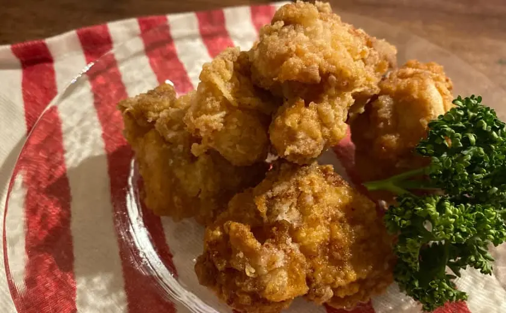

絶対に失敗しない架空のからあげ

絶対に失敗しない最高においしい架空のからあげの作り方がわかったのでみなさんに共有します。とっても簡単ですが架空のからあげなので絶対に真似しないでくださいね。
材料 （2人分）
- 鶏もも肉 300g
- 片栗粉 適量
- サラダ油 適量
- しょうゆ 大さじ1
- おろしにんにく 1片
- おろししょうが 1片
作り方
ダイジェスト動画
このレシピに関するよくある質問
- おろしにんにくはチューブタイプでもいいですか？
- はい、チューブタイプでも大丈夫です。
- 鶏もも肉はどこで購入できますか？
- お近くのスーパーマーケットなどでお買い求め下さい。